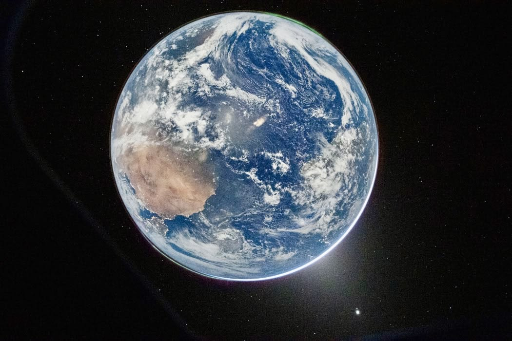
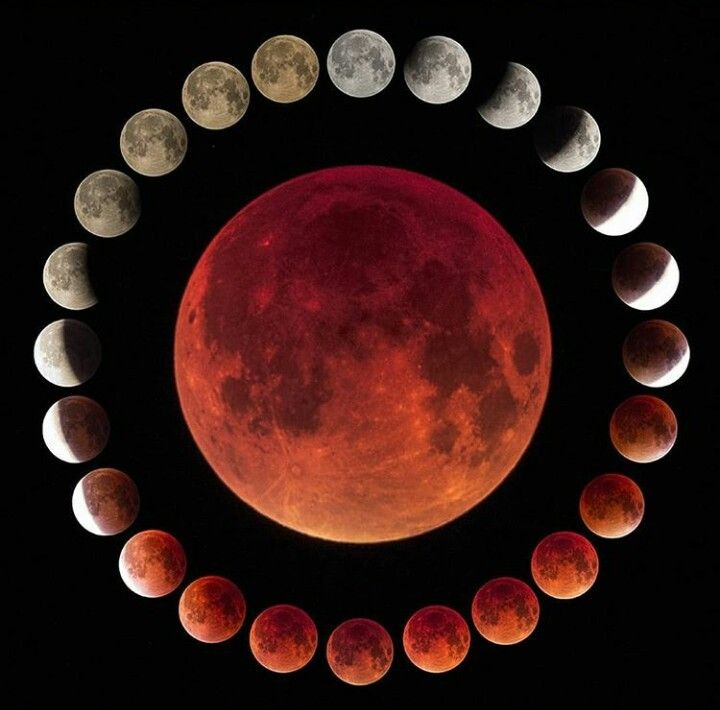
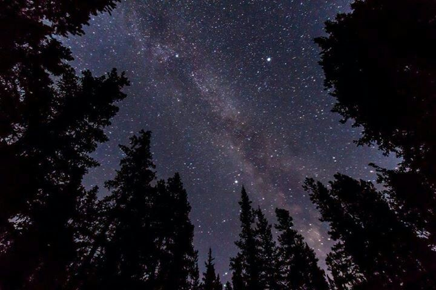
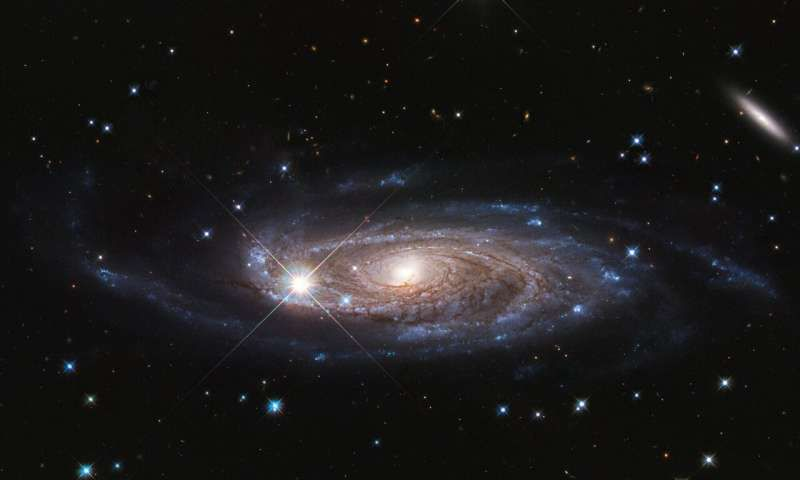
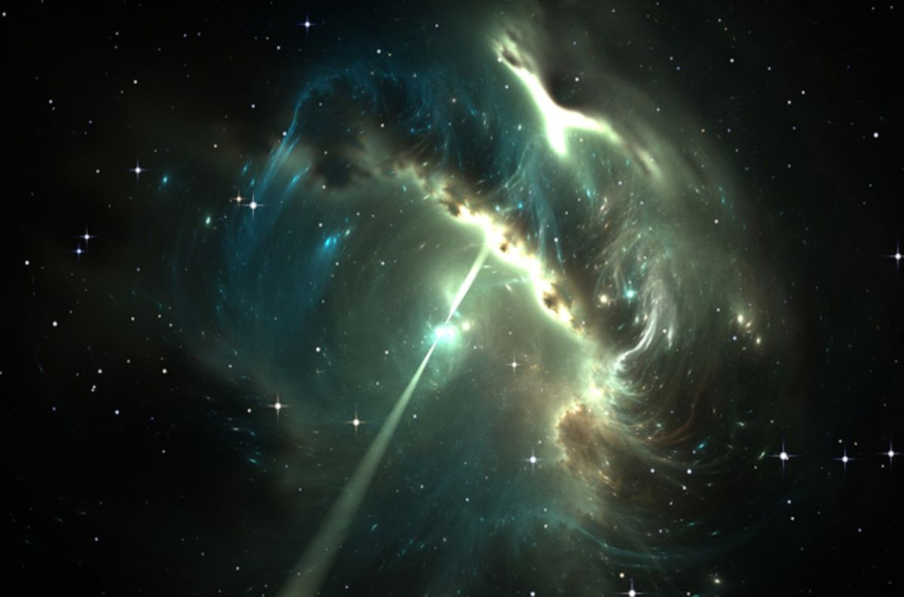

Земля — планета в движении
Почему день сменяется ночью
Кажется, будто Солнце каждое утро поднимается над горизонтом, а вечером исчезает за ним. Но на самом деле всё наоборот: это Земля постоянно вращается вокруг собственной оси. Полный оборот занимает примерно 24 часа. Когда наша часть планеты обращена к Солнцу, наступает день, а когда отворачивается от него — ночь.
На экваторе поверхность Земли вращается со скоростью около 1670 км/ч. Мы не ощущаем этого движения, потому что вместе с планетой движемся и сами.
Откуда берутся времена года
Причина смены времён года — не изменение расстояния от Земли до Солнца, как иногда думают. Всё дело в наклоне земной оси. Земля движется вокруг Солнца, и в разные месяцы солнечные лучи по-разному освещают полушария.
Когда Северное полушарие наклонено к Солнцу, в нём лето, а в Южном — зима. Через полгода ситуация меняется.
В январе Земля находится ближе всего к Солнцу, а в июле — дальше всего. И всё же в Северном полушарии январь обычно холодный, а июль тёплый.
Полярный день и полярная ночь
За полярными кругами привычный распорядок дня может полностью измениться. Летом Солнце там иногда не заходит за горизонт даже ночью. Это полярный день. Зимой происходит обратное: Солнце может не появляться над горизонтом неделями или даже месяцами — наступает полярная ночь.
Чем ближе к полюсам, тем дольше могут продолжаться эти явления. На самих полюсах полярный день и полярная ночь длятся примерно по полгода.

Луна и солнечный свет
Почему Луна меняет свой вид
Луна кажется то тонким серпом, то половиной круга, то большим светящимся диском. Но её форма остаётся неизменной. Луна не светится сама по себе — она отражает солнечный свет.
Пока Луна движется вокруг Земли, мы видим разные части её освещённой половины. Так появляются фазы: новолуние, первая четверть, полнолуние и последняя четверть.
На Луне тоже есть день и ночь. Только длятся они гораздо дольше земных: примерно по две недели каждый.
Солнечное затмение: когда Луна закрывает Солнце
Иногда Луна оказывается прямо между Землёй и Солнцем. Она начинает закрывать солнечный диск, и на Земле наблюдается солнечное затмение. Если Луна закрывает Солнце полностью, затмение называют полным.
В этот момент в некоторых районах Земли среди дня на несколько минут становится заметно темнее. Луна перекрывает прямой солнечный свет, хотя само Солнце продолжает излучать энергию.
Полное солнечное затмение можно наблюдать только в узкой полосе на поверхности Земли. Поэтому для многих людей оно остаётся редким событием.

Звёзды, планеты и космические расстояния
Солнце — тоже звезда
Солнце кажется нам особенным, потому что находится гораздо ближе к Земле, чем остальные звёзды. Но с точки зрения астрономии оно — звезда, которая производит энергию в своём ядре благодаря термоядерным реакциям.
Юпитер, Венера и другие планеты устроены иначе: они не производят собственного видимого света, а отражают солнечные лучи.
Почему звёзды мерцают
Если посмотреть на ночное небо, можно заметить, что звёзды словно слегка мигают. Это происходит не потому, что они меняют яркость, а из-за земной атмосферы. Воздушные слои постоянно движутся и имеют разную температуру и плотность. Проходя через них, свет немного меняет направление, поэтому звезда кажется мерцающей.
Планеты обычно светят ровнее: они находятся ближе к Земле и видны не как отдельные точки, а как крошечные диски.
Метеоры — не падающие звёзды
Яркая вспышка, которую иногда можно увидеть ночью, часто оказывается метеором. Это световое явление возникает, когда небольшое космическое тело входит в атмосферу Земли и взаимодействует с воздухом.
Само тело в космосе называется метеороидом. Если его фрагмент достигает поверхности Земли, он становится метеоритом.
Многие метеороиды настолько малы, что полностью разрушаются в атмосфере, так и не достигнув поверхности.
Что такое световой год
Когда астрономы говорят о расстояниях между звёздами, километры становятся не очень удобными. Поэтому используют световые годы.
Световой год — это расстояние, которое свет проходит за один год. Оно составляет примерно 9,46 триллиона километров. Например, свет от Солнца доходит до Земли примерно за 8 минут 20 секунд.

Млечный Путь и расширяющаяся Вселенная
Наш космический дом — Млечный Путь
Земля, Солнце и вся Солнечная система находятся внутри огромной галактики — Млечного Пути. В ней содержатся сотни миллиардов звёзд, а также газ, пыль и другие компоненты.
Если посмотреть на тёмное небо вдали от городских огней, можно увидеть светлую полосу, пересекающую небосвод. Это и есть часть нашей галактики, которую мы наблюдаем изнутри.
Вселенная продолжает расширяться
Галактики не просто существуют в пространстве — на огромных расстояниях многие из них удаляются друг от друга. Это связано с расширением самой Вселенной.
Учёные обнаружили, что расширение не замедляется, а ускоряется. Причину этого явления связывают с загадочной тёмной энергией, природа которой до сих пор остаётся неизвестной.
Свет от некоторых галактик путешествует до нас миллиарды лет. Поэтому, наблюдая далёкие объекты, астрономы буквально заглядывают в прошлое Вселенной.

Необычные миры и загадочные объекты
Почему Венера горячее Меркурия
Меркурий находится ближе всех планет к Солнцу, но самой горячей планетой Солнечной системы является Венера. Её поверхность нагревается примерно до 465 °C.
Всё дело в атмосфере: она очень плотная и состоит преимущественно из углекислого газа. Такой состав создаёт мощный парниковый эффект — тепло задерживается у поверхности и почти не уходит обратно в космос.
На Венере температура настолько высокая, что свинец на её поверхности мог бы плавиться.
Как движутся планеты вокруг Солнца
Планеты не движутся вокруг Солнца по идеальным кругам. Их орбиты имеют форму эллипсов — слегка вытянутых окружностей. Солнце находится не в центре такого эллипса, а в одной из его особых точек — фокусе.
Эту закономерность описал астроном Иоганн Кеплер. Он также установил, что планеты движутся быстрее, когда находятся ближе к Солнцу, и медленнее, когда удаляются от него.
Пульсары — космические маяки
Пульсар — это особый вид нейтронной звезды, оставшейся после взрыва массивной звезды. Она невероятно плотная и может вращаться с огромной скоростью.
Пульсары испускают пучки излучения. Когда такой пучок направлен в сторону Земли, мы регистрируем короткий импульс. Из-за вращения звезды эти сигналы повторяются с удивительной регулярностью. Именно поэтому пульсары часто сравнивают с космическими маяками.
Некоторые пульсары совершают сотни оборотов за одну секунду. Это одни из самых быстро вращающихся объектов, известных астрономам.